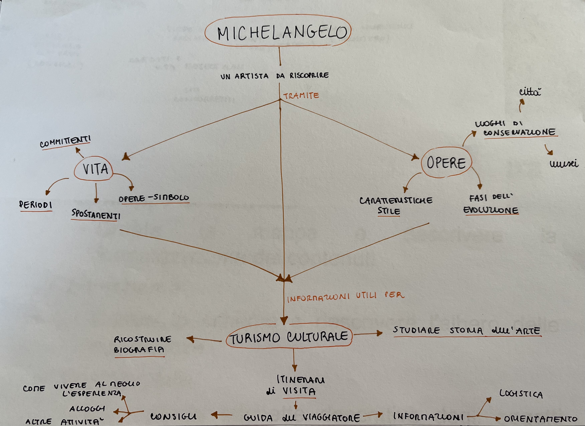
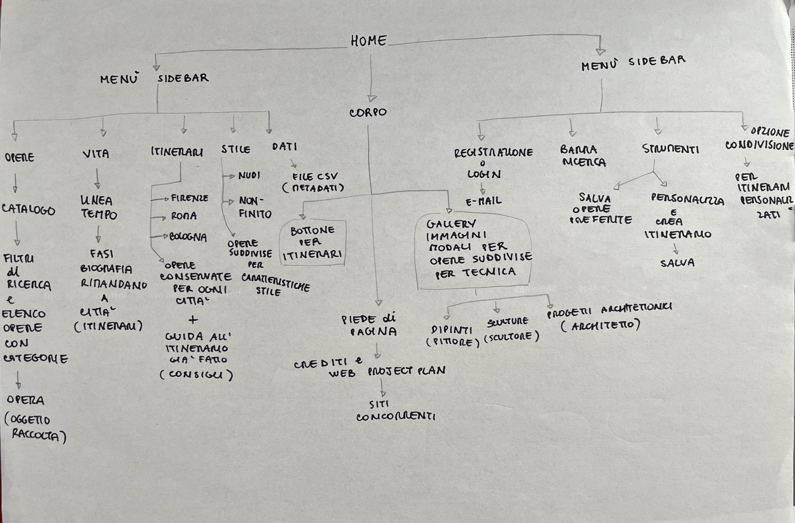
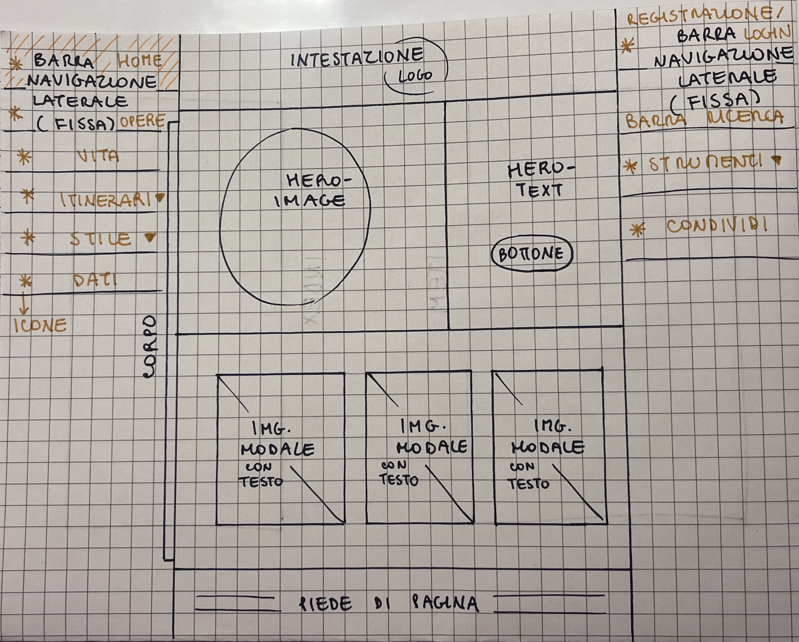
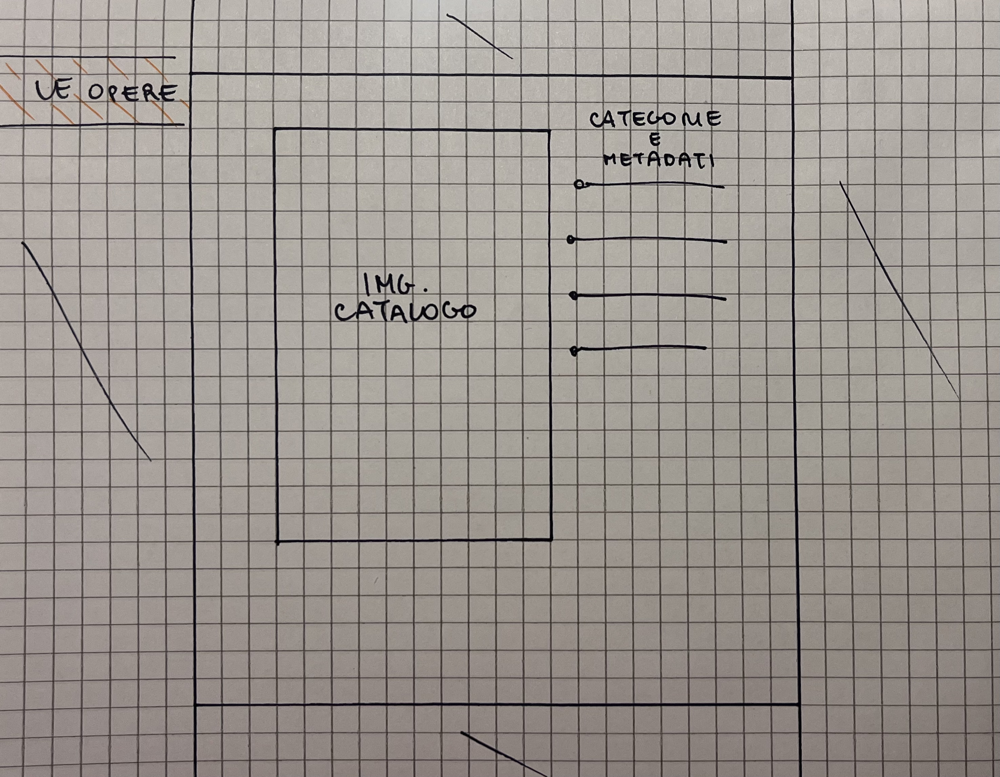

Web project plan
Idea
Questa risorsa digitale è un catalogo delle opere di Michelangelo Buonarroti conservate in Italia e significative per un'esposizione completa della figura dell'artista.
Per rendere la consultazione più completa e interessante, oltre che per eventualmente filtrare la raccolta di opere tramite questi parametri, sono previsti dei contenuti aggiuntivi, quali: la biografia dell'artista, articolata nei suoi periodi; informazioni logistiche e consigli pratici per pianificare una visita delle opere che si preferiscono nelle città in cui esse sono conservate, come per esempio come raggiungere i musei e come organizzare l'intera giornata, anche prima e dopo della visita; alcune caratteristiche distintive dello stile dell'artista.
1. Brief
Finalità
Il sito è pensato per essere non solo un supporto allo studio, con tutti i contenuti relativi alla vita e alle opere dell'artista disponibili per la consultazione, ma anche una guida di viaggio, che offre itinerari di visita già composti o personalizzabili. Lo scopo è di permettere agli utenti di ripercorrere in modo essenziale ma completo la storia di Michelangelo per mezzo delle sue opere più famose, tanto online che nei luoghi di conservazione. La selezione di opere è stata progettata per essere quanto più emblematica di alcuni periodi biografici dell'artista, di fasi della sua evoluzione artistica o di tipologie di tecniche da lui utilizzate.
Pubblico
I destinatari possono essere studenti, appassionati di arte non esperti o amanti di viaggi e turismo culturale. Gli utenti esterni, che navigano il sito senza registrarsi, possono accedere alla sola consultazione dell'intera offerta di contenuti. Se invece si procede alla registrazione con la propria e-mail, tramite l'apposita sezione, sarà possibile interagire utilizzando diversi strumenti, come: il salvataggio delle opere che più si preferiscono; la creazione di un itinerario personalizzato e la sua condivisione. Una possibiità in più per gli utenti non registrati è quella di poter visionare comunque alcuni itinerari già composti disponibili nella sezione dedicata, ma senza poterli personalizzare, salvare, ne condividere. Una volta che si è effettuata la registrazione si accederà scegliendo l'opzione del login.
Accesso
La risorsa si compone di immagini e testi. Il design è progettato per rendere al massimo delle sue funzionalità su computer o tablet.
Contenuti e dati
Per la realizzione di questa risorsa digitale si è attinto a siti web, per le immagini e per i metadati delle opere, e a volumi cartacei, per le informazioni biografiche. Per quanto riguarda le informazioni contenute nella sezione dedicata agli itinerari di visita, si fa riferimento al web, nello specifico ai siti ufficiali dei musei, delle strutture ricettive e dei centri di informazioni turistiche delle città interessate. Per esporre in modo più efficace la biografia dell'artista è stata prodotta una struttura grafico-visiva che permette di rielaborare le informazioni sotto forma di una linea del tempo.
2. Benchmark
Rispetto ai siti già esistenti sullo stesso argomento, questa risorsa digitale presenta i contenuti in modo più immediato ed efficace. Si è evitato di esporre la biografia dell’artista con una serie di paragrafi di testo, preferendo la struttura visiva della linea del tempo, in modo da cogliere a vista d’occhio le varie fasi e gli spostamenti dell'artista. Inoltre, ciò permette di associare in modo più intuitivo le opere al rispettivo periodo di realizzazione; questo tipo di collegamento logico è utilizzato anche dai siti web concorrenti. La particolarità unica di questo sito è quella di offrire dei servizi che permettono di far confluire le informazioni apprese dai contenuti esposti in un risvolto pratico, ovvero nell'organizzazione di un itinerario di visita tramite gli strumenti interattivi a disposizione.
Siti concorrenti di riferimento: https://libreriamo.it/arte/michelangelo-10-opere-significative-artista/ e https://dueminutidiarte.com/2021/11/06/michelangelo-buonarroti-opere-famose/ Inoltre, la barra di avanzamento di lettura presente nella risorsa https://www.artribune.com/arti-visive/archeologia-arte-antica/2022/03/michelangelo-buonarroti-10-opere/ è stata riutilizzata in questo sito, in posizione fissa sotto l'intestazione, per facilitare la consultazione, in accordo con la sua finalità anche pratica.
3. Struttura
Mappa concettuale
Formalizzazione dei contenuti: la vita in una linea del tempo, le opere in una serie di immagini, con i rispettivi metadati, raccolte in un catalogo e gli itinerari in dei raggruppamenti delle opere in sezioni in base alla città in cui sono conservate, con box aggiuntivi dedicati alla guida di viaggio, contenenti informazioni e mappe geografiche cliccabili con indicati i punti di interesse.
Schema
Dalla pagina home dipendono tutte quelle che si possono aprire a partire dai menù di navigazione laterali, quindi a destra il catalogo di opere, da cui si possono consultare i singoli items, la linea del tempo della vita, la sezione tripartita sugli itinerari, le due suddivisioni sulla base dello stile e la pagina dei dati; a sinistra la finestra per la registrazione o login, gli strumenti di salvataggio, personalizzazione e condivisione. Il corpo della pagina home rimanda agli itinerari, tramite un bottone nell'hero; sotto di questo è presente una galleria di 3 immmagini modali che permette di filtrare le opere in base alla tecnica di realizzione. Nel piede di pagina si può aprire questa pagina, ovvero il Web Project Plan.
Categorie
| Titolo | Tecnica | Data di completamento | Luogo di conservazione |
|---|---|---|---|
| Madonna della scala | Stiacciato marmoreo | 1491 | Firenze, Casa Buonarroti |
| Angelo reggicandelabro | Scultura marmorea | 1495 | Bologna, San Domenico |
| Pietà Vaticana | Scultura marmorea | 1499 | Roma, San Pietro in Vaticano |
| David | Scultura marmorea | 1501 | Firenze, Accademia |
| Tondo Doni | Dipinto a tempera grassa su tavola | 1507 | Firenze, Uffizi |
| Volta della Cappella Sistina | Ciclo di affreschi | 1512 | Roma, Palazzi Vaticani |
| Studio per le fortificazioni di Firenze | Disegno a penna | 1529 | Firenze, Casa Buonarroti |
| Giudizio Universale | Affresco | 1535 | Roma, Palazzi Vaticani, Cappella Sistina |
| Tomba di Giulio II | Progetto architettonico e scultoreo in marmo | 1545 | Roma, San Pietro in Vincoli |
| Conversione di San Paolo | Affresco | 1545 | Roma, Palazzi Vaticani, Cappella Paolina |
| Pietà Bandini | Scultura marmorea | 1555 | Firenze, Museo dell'Opera del Duomo |
4. Layout
Wireframe pagina index
L'architettura logica del sito si compone di alcuni elementi fissi e uno variabile, il corpo di pagina. Gli elementi della pagina fissi sono: l'intestazione, con un logo, e il piede di pagina, in cui risiede la metanavigazione. Da qui si possono aprire le pagine delle licenze, dei crediti e del Web Project Plan. Tra le due barre di navigazione, fisse, è possibile scrollare solo la colonna centrale, che contiene anche il corpo della pagina. In base alla pagina corrente cambia il suo contenuto. Questa pagina, l'index, si compone di due righe, la prima contenente l'hero-image e l'hero-text, la seconda con una galleria di 3 immagini modali che al passaggio del mouse mostrano il testo. Dalle barre laterali si può navigare attraverso i canali primari e secondari.
Wireframe pagina di canale di navigazione primaria

Nella barra di navigazione laterale di sinistra, cliccando su "La vita" si apre questa pagina di canale di navigazione primaria. Il contenuto del corpo di pagina contiene una linea del tempo, che illustra i periodi della vita di Michelangelo. Gli altri elementi della pagina e strumenti di navigazione rimangono gli stessi. L'architettura logica del sito è progettata nel rispetto delle regole di orientamento, learneability e memorizzabilità.
Wireframe pagina di canale di navigazione secondaria: l'item
Dopo essere entrati nella pagina di canale di navigazione primaria del catalogo, cliccando su "Le opere" dalla barra di navigazione laterale di sinistra, si può consultare il catalogo in una visione d'insieme oppure cliccare a sua volta su una delle opere. Si aprirà così questa pagina di canale di navigazione secondaria, che mostra nel corpo di pagina un item della raccolta. A fianco dell'immagine ingrandita si possono leggere le categorie e i metadati descrittivi dell'oggetto.
5. Usabilità
Architettura
L’architettura d’interfaccia è progettata nel rispetto delle regole di usabilità. Il layout è fisso, con un’intestazione, due barre di navigazione laterali, un piede di pagina e un corpo. L’unico elemento che viene di volta in volta riempito di contenuti diversi, al cambiare della pagina, è il corpo, affinché venga rispettata la regola di orientamento. Le barre di navigazione laterale sono fisse, permettendo lo scorrimento verticale solamente dell’intestazione, corpo e piede di pagina. Il labeling è coerente ed esplicativo del contenuto che il sito offre. La struttura è il più possibile organizzata secondo il box-model, ovvero racchiusa visivamente dentro sezioni a seconda delle sezioni logiche di contenuto. La navigazione è gerarchicamente progettata per rispettare le regole di memorizzabilità e learnability.
Aspetto e tipografia
L’aspetto del sito è progettato per rispecchiare al meglio il contenuto e lo scopo della risorsa, con uno stile semplice ma efficace. Le componenti di interfaccia (la scrittura dei testi e le immagini) rispettano la regola del feedback, in quanto producono un’azione di risposta al passaggio del mouse, come per esempio l’ingrandimento o l’effetto modale con una didascalia, in caso di un’immagine, e il cambiamento di colore per i testi, la sottolineatura per i link che sono stati cliccati.
Colori, icone e font
Anche la scelta del font e dei colori è semplice ma efficace: il font è uno solo e si differenzia tra titoli e paragrafi solo per grandezza e effetto bold, mentre i colori sono pochi e rientrano tutti nella stessa gamma di colore marrone, variando di gradazione e intensità per differenziare tra bottone, paragrafo, titolo, didascalia ecc. Le icone vengono usate per rispettare la regola delle convenzioni nelle barre di navigazione, per indicare gli elementi dei menù.
6. Servizi
Alcuni sistemi di browsing aggiuntivi per la navigazione del sito sono: delle faccette nella sezione del catalogo per filtrare le opere; delle mappe per ogni città, cliccabili e con indicati i punti di interesse, nella sezione degli itinerari; la linea del tempo per illustrare la biografia dell'artista.
L'interazione viene facilitata dall'uso di: una finestra modale per la registrazione e il login che si apre cliccandola dalla barra di navigazione laterale di destra; dei bottoni per aprire la sezione degli itinerari dalla pagina home e per selezionare le proprie opere preferite nella sezione di personalizzazione; una gallery di 3 card di immagini con effetto overlay e modale; dropdowns nelle barre di navigazione; tooltips.
Per valorizzare l'accesso utente si è fatto uso del servizio di visualizzione offerto dal sito web https://freefrontend.com/css-timelines/ per la creazione della linea del tempo e di molti template del sito W3 schools, nello specifico della sezione "How to", ad esempio per l'implementazione della galleria di card di 3 immagini con effetto overlay, per rendere la barra di navigazione laterale e fissa ecc.
7. Bibliografia
Riferimenti bibliografici: "Michelangelo. Una vita inquieta" - Antonio Forcellino.
Riferimenti sitografici: Wikipedia, W3 schools, esempio di sito e repository su Github, https://freefrontend.com/css-timelines/, https://stackoverflow.com/questions.